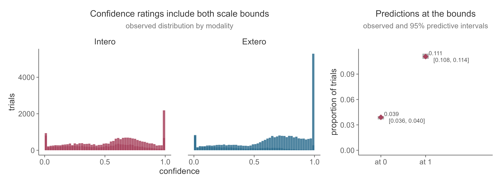
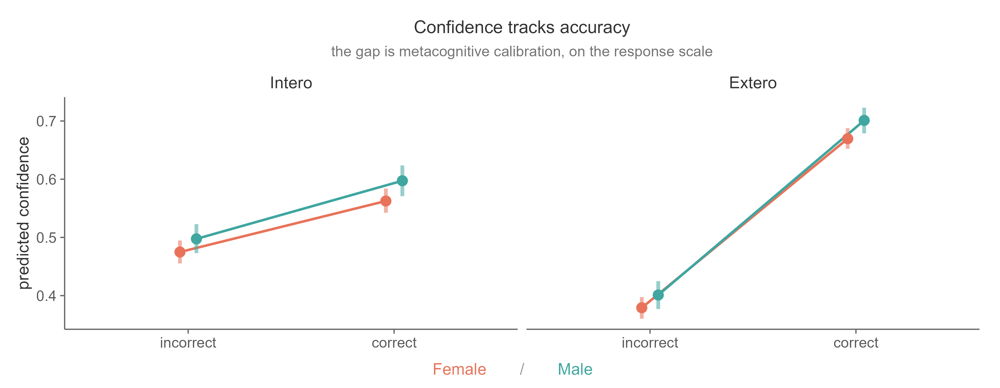
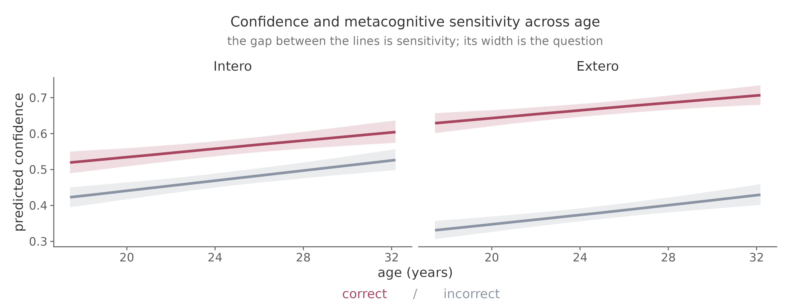

Metacognition#
Modelling the confidence rating collected on every trial, and asking whether confidence tracks accuracy.
Perception and metacognition are different questions. A participant can discriminate their heart rate well while having no idea when they are right, and the reverse happens too. An effect can appear in one with the other unchanged, so neither is a proxy for the other.
What the ratings look like#
Confidence is a slider from 0 to 100, and people use both ends in earnest. In the example data 15.0% of trials sit exactly on a bound: 3.9% at zero and 11.1% at one.

The right panel is the check that matters, and it is worth looking at before the model is even introduced: reproducing that mass at the two ends is the entire reason for choosing this likelihood. A model that fits the interior beautifully and misses the bounds has failed at the one job it was picked for.
That shape rules out the obvious models. A Gaussian puts probability outside the scale. A beta likelihood is undefined at exactly 0 and 1, so it forces you to nudge the bounds inward by some epsilon or drop those trials, and the trials you would drop are the most and least confident ones. Binning into a Likert scale throws away information and makes the answer depend on where you cut.
Why not the m-ratio#
The m-ratio, meta-d′ divided by d′, is the usual summary of metacognitive efficiency, and the original HRD paper reported it. We no longer recommend it for this task, and the reason is specific to how the staircase works.
The HRD does not hold accuracy constant. The Psi procedure converges on the participant’s point of subjective equality: the Δ-BPM at which they are equally likely to answer “faster” or “slower”. That is a subjective staircase, tracking the very bias the task exists to measure, not a performance-tracking one aiming at some fixed percentage correct.
Accuracy, though, is scored against the true heart rate. A “faster” response counts as correct only when Δ-BPM is above zero, and “slower” only when it is below.
Those two facts come apart for exactly the participants who are most interesting. Someone whose threshold sits at −15 Δ-BPM spends the session being played tones around 15 BPM below their true rate, because that is where the staircase has decided to put them. Almost every trial then has “slower” as the objectively correct answer. One stimulus class barely occurs, and the type-1 hit and false-alarm rates that d′ and meta-d′ are built from rest on a handful of trials, or none. The more biased the participant, the worse this gets, so the measure degrades precisely where the task has found something worth reporting.
There is a further problem underneath. Under this design d′ is not a clean index of perceptual sensitivity anyway: it mixes bias with precision, which is the confound the psychometric function was introduced to resolve. Dividing by it reintroduces what the HRD was built to separate.
Finally, meta-d′ expects confidence in a few discrete bins, so a continuous slider has to be cut into categories. The original analysis used four. That discards information and makes the result depend on where the cut points fall.
None of this makes meta-d′ a poor measure in general. It makes it a poor fit for a subjective staircase scored against an objective truth.
Ordered beta regression#
Ordered beta regression models the interior of the scale with a beta likelihood and the two bounds as separate outcomes, in one generative model. Nothing is nudged and nothing is dropped (Kubinec, 2023).
library(ordbetareg)
data <- data |>
filter(Decision %in% c("More", "Less"), !is.na(Confidence), !is.na(ResponseCorrect)) |>
mutate(
Accuracy = factor(ResponseCorrect, levels = c(0, 1),
labels = c("incorrect", "correct")),
Confidence = Confidence / 100 # keep exact 0 and 1
)
fit <- ordbetareg(
formula = bf(Confidence ~ Accuracy + (Accuracy | Subject)),
data = data,
chains = 4, cores = 4,
file = "fit_confidence"
)
ordbetareg wraps brms, so the formula syntax, priors and post-processing are all
the usual ones.
The quantity of interest#
The coefficient on Accuracy is how much higher confidence runs on correct trials
than incorrect ones. That is metacognitive sensitivity, stated directly rather
than as a ratio, and it needs no division by a staircase-determined d′.
Because the intercept absorbs overall confidence, sensitivity and bias stay separate. You do not have to choose between “how confident are they” and “does confidence track accuracy”: the model gives both.
In the example data the raw gap is large and near-universal: mean confidence is about 25 points higher on correct trials, and 99% of participants show a gap in that direction.
Testing a hypothesis about it#
Question |
Formula |
|---|---|
Does confidence track accuracy |
|
Does that differ between conditions |
|
Does it differ between groups |
|
Does it change with age |
|
The interaction is usually the actual hypothesis. “Group A had lower metacognitive
sensitivity” is a claim about Accuracy × group, not about group.
The random effects rule is the same as in the hierarchical
model: a term gets a random slope only if it varies within a
participant. Accuracy and Modality do. gender and age do not.
Reading the output#
Coefficients are on the latent scale and are not slider points. For anything you report, compute predictions on the response scale:
library(marginaleffects)
avg_predictions(fit, by = "Accuracy")
avg_comparisons(fit, variables = "Accuracy")
What the worked model found#
Fitted to 68,932 trials from 512 participants, with accuracy interacted with modality, gender and age. Coefficients are on the latent scale, so read the figure for anything in slider units.

Term |
Estimate |
95% CI |
|---|---|---|
|
+1.09 |
[1.03, 1.15] |
|
+0.36 |
[0.30, 0.42] |
|
−0.76 |
[−0.83, −0.70] |
|
+0.13 per SD |
[0.075, 0.179] |
|
−0.02 |
[−0.064, 0.017] |
|
+0.08 |
[−0.026, 0.192] |
|
+0.05 |
[−0.036, 0.129] |
Accuracycorrect is metacognitive sensitivity, stated directly rather than as a
ratio, and it is clearly positive: confidence tracks accuracy.
The interaction is the finding. Sensitivity in the cardiac condition is 1.09 − 0.76 = 0.32, against 1.09 for tones: participants know when they are right about a sound far better than they know when they are right about their own heart. Overall confidence goes the other way, higher in the cardiac condition, which is worth pausing on. People are more confident and less well calibrated about their hearts, and those are two different coefficients rather than one ratio being pulled in opposite directions.
Bias and sensitivity come apart#
Age shows the same separation, and it is the clearest argument for this model over a single summary score.

Older participants are more confident overall (age_z = +0.13, interval excluding
zero), but the gap between correct and incorrect trials does not change with age
(Accuracycorrect:age_z = −0.02, interval spanning zero). Both lines rise
together; the distance between them stays put.
Confidence went up. Metacognition did not change. A measure that folds the two together has to report one number for that, and whichever number it reports will be wrong about something.
Checking#
The usual diagnostics apply: no divergent transitions, rhat < 1.01, healthy ESS.
One check is specific to this model. The posterior predictive must reproduce the
mass at 0 and 1, not just the interior. Handling those bounds properly is the
entire reason for using ordered beta, so if pp_check() misses them, the model is
not doing the job you chose it for.
Before you fit#
Look at scale usage per participant. Someone who left the slider at one value all session contributes nothing about metacognition, and the model will quietly absorb them:
data |> group_by(Subject) |> summarise(sd = sd(Confidence))
Decide explicitly whether to exclude them. Trials with no response have no accuracy and must be dropped, never recoded as incorrect.